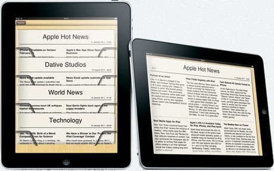

Check if your friends or colleagues are busy before you give them a call. Let your friends know you're busy so you're not interrupted.

News Kiosk
Use News Kiosk to search for news sources on any topic you like and subscribe to those that interest you. News Kiosk will show you the latest news from your subscribed list as a rack of newspapers, ready for you to open and browse.